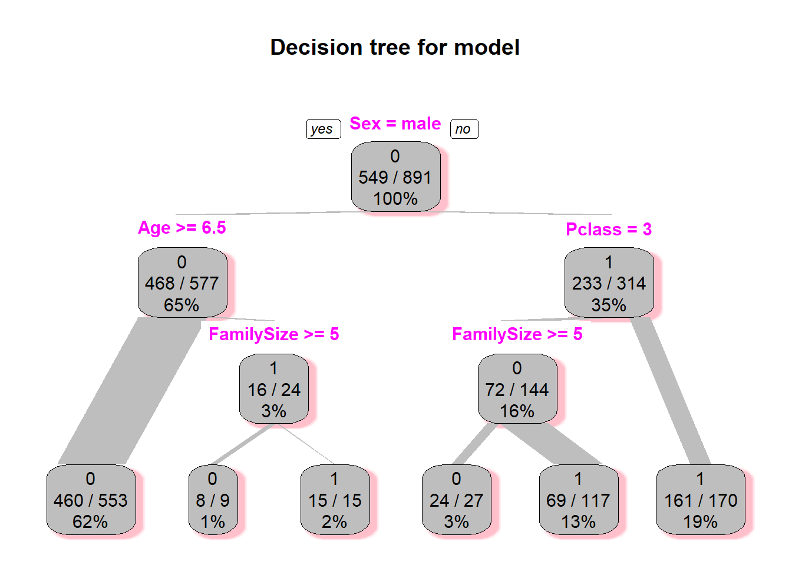

train <- read.csv('./data/train.csv')
train$FamilySize <- train$SibSp + train$Parch + 1
str(train)## 'data.frame': 891 obs. of 13 variables:
## $ PassengerId: int 1 2 3 4 5 6 7 8 9 10 ...
## $ Survived : int 0 1 1 1 0 0 0 0 1 1 ...
## $ Pclass : int 3 1 3 1 3 3 1 3 3 2 ...
## $ Name : Factor w/ 891 levels "Abbing, Mr. Anthony",..: 109 191 358 277 16 559 520 629 417 581 ...
## $ Sex : Factor w/ 2 levels "female","male": 2 1 1 1 2 2 2 2 1 1 ...
## $ Age : num 22 38 26 35 35 NA 54 2 27 14 ...
## $ SibSp : int 1 1 0 1 0 0 0 3 0 1 ...
## $ Parch : int 0 0 0 0 0 0 0 1 2 0 ...
## $ Ticket : Factor w/ 681 levels "110152","110413",..: 524 597 670 50 473 276 86 396 345 133 ...
## $ Fare : num 7.25 71.28 7.92 53.1 8.05 ...
## $ Cabin : Factor w/ 148 levels "","A10","A14",..: 1 83 1 57 1 1 131 1 1 1 ...
## $ Embarked : Factor w/ 4 levels "","C","Q","S": 4 2 4 4 4 3 4 4 4 2 ...
## $ FamilySize : num 2 2 1 2 1 1 1 5 3 2 ...library(rpart)
# make explicit factor levels for specific variables: Sex + Pclass
train$Sex <- as.factor(train$Sex)
train$Pclass <- as.factor(train$Pclass)
# now train on entire training set (714 rows)
fol <- formula(Survived ~ Age + Sex + Pclass + FamilySize)
model <- rpart(fol, method="class", data=train)
library(rpart.plot)
rpart.plot(model,branch=0,branch.type=2,type=1,extra=102,shadow.col="pink",box.col="gray",split.col="magenta",
main="Decision tree for model")
library(randomForest)## randomForest 4.6-14## Type rfNews() to see new features/changes/bug fixes.# Set a random seed
set.seed(754)
# Build the model (note: not all possible variables are used)
rf_model <- randomForest(factor(Survived) ~ . - Name - Ticket - Cabin, data = train[!is.na(train$Age),])rf_model##
## Call:
## randomForest(formula = factor(Survived) ~ . - Name - Ticket - Cabin, data = train[!is.na(train$Age), ])
## Type of random forest: classification
## Number of trees: 500
## No. of variables tried at each split: 3
##
## OOB estimate of error rate: 17.79%
## Confusion matrix:
## 0 1 class.error
## 0 378 46 0.1084906
## 1 81 209 0.2793103test <- read.csv('./data/test.csv')
test$FamilySize <- test$SibSp + test$Parch + 1
str(test)## 'data.frame': 418 obs. of 12 variables:
## $ PassengerId: int 892 893 894 895 896 897 898 899 900 901 ...
## $ Pclass : int 3 3 2 3 3 3 3 2 3 3 ...
## $ Name : Factor w/ 418 levels "Abbott, Master. Eugene Joseph",..: 210 409 273 414 182 372 85 58 5 104 ...
## $ Sex : Factor w/ 2 levels "female","male": 2 1 2 2 1 2 1 2 1 2 ...
## $ Age : num 34.5 47 62 27 22 14 30 26 18 21 ...
## $ SibSp : int 0 1 0 0 1 0 0 1 0 2 ...
## $ Parch : int 0 0 0 0 1 0 0 1 0 0 ...
## $ Ticket : Factor w/ 363 levels "110469","110489",..: 153 222 74 148 139 262 159 85 101 270 ...
## $ Fare : num 7.83 7 9.69 8.66 12.29 ...
## $ Cabin : Factor w/ 77 levels "","A11","A18",..: 1 1 1 1 1 1 1 1 1 1 ...
## $ Embarked : Factor w/ 3 levels "C","Q","S": 2 3 2 3 3 3 2 3 1 3 ...
## $ FamilySize : num 1 2 1 1 3 1 1 3 1 3 ...#pred <- predict(rf_model, test)
#table(pred, test$taste)